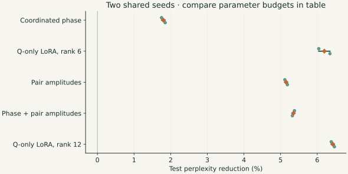

Attention and positional encodings · Part 2
Looking for attention displacement mechanisms
The previous page showed two ways to move a preference: coordinate phases, or rebalance amplitudes. I wanted to find out whether trained models use either route—and whether making one easier to learn would help.
First attempt: finding coordinated phase changes
I began with the original model, before adding any adapters. In a four-item matching task, I moved the item list by 20 or 40 tokens while keeping the question’s position fixed. If query phases followed the items through a coordinated RoPE shift, their changes should line up with the pairs’ frequencies.
The closest case was Qwen2.5-1.5B-Instruct, layer 23, head 4, pairs 16–31. On 32 fresh tables, the observed phase-updated score profiles were closer to a translated source profile than an unchanged one: correlations of 0.890 versus 0.755. The fitted displacement scale was 0.885, where 1 would be an exact translation.
That was suggestive, but the intervention did not improve first-token accuracy: all four conditions scored 230/256. I took it as a partial translation-like component in one band, with inconclusive evidence for a general displacement mechanism.
The first experiment: prompts, figures, confirmation results, and controls
The closest evidence I found was in layer 23, head 4 of Qwen2.5-1.5B-Instruct, using pairs 16–31 (zero-based indices). This was a narrower result than the demonstration in Part 1: a translation-like component in one band of a head, rather than a whole attention pattern sliding intact.
I gave the model four items, each with a color, a shape, and a letter label, and asked a question such as “Return the label for red round.” Then I moved the same item list forward by 20 or 40 tokens, moving neutral background sentences to keep the question and final query token at exactly the same positions. The correct answer stayed the same. Could the query phases adjust to follow the relevant item, even though the query itself had not moved?
See one actual prompt and what moved
Items:
blue round : W
blue square : E
red round : S
red square : Z
Question:
Return the label for red round.The expected answer is S. Eight copies of “The weather remains calm.” were split before and after the item list: 0/8, 4/4, or 8/0. This moved the label tokens by exactly 0, 20, or 40 tokens while keeping the final assistant-prefix query at token 104 in this example. The system instruction, chat formatting, full prompts, positions, and original answers are in the saved experiment records.
With fixed query position and unchanged key content, following a key moved forward by Δp predicts a query-phase change of approximately Δarg qj = λωjΔp. A rigid compensation would have λ = 1. Here the positive sign compensates a key moving forward in the sequence; the Part 1 demo instead defines a positive shift as moving a preference farther into the past.
I compared the query phases the model actually produced with that prediction. To isolate their contribution, I kept the original query magnitudes and original key vectors fixed, substituting only the moved-context query phases in pairs 16–31. The curves below measure this band’s score for the target label minus its mean score for the three other labels, as the frozen keys are synthetically shifted. They are diagnostic score curves, not the model’s full attention probabilities.

The head and band were chosen after an exploratory search, so I froze that choice and tested 32 fresh tables × four questions × three placements: 384 prompts. The unmodified model answered 355 correctly (92.4%). On these new tables, the actual phase-updated profiles correlated more strongly with a translated source profile (0.890) than with an unchanged one (0.755). The paired advantage was 0.136, with a 95% table-bootstrap interval of 0.101–0.170. A phase-law fit gave λ = 0.885, with interval 0.830–0.945: close to a translation, but not an exact rigid one.
I also tested a phase intervention in the full model. On the 256 moved prompts, I replaced this band’s query phase with the original-location phase, then added either the predicted correction or its opposite. The scale λ = 0.95 had been fitted on discovery data and frozen before confirmation. Destination query magnitudes and actual destination keys were preserved; subsequent layers were recomputed.

The geometric correction slightly improved target-versus-other-label log odds relative to frozen source phase (+0.00569) and wrong-sign correction (+0.01202). It was slightly worse than leaving the native phase alone (−0.00304). First-token accuracy was identical in all four conditions: 230/256. There was no measurable improvement in the target token’s full-vocabulary probability. This was a first-token forward-pass test, not a test of complete generated answers under intervention.
How closely did the individual pairs follow the phase law?

The initial highest-frequency-band test (pairs 0–15, L19 H3) failed: its held-out profiles matched the unchanged source much better than the translated source. The middle-band result above was a follow-up with an independent confirmation set. Full-head pre-RoPE target-key similarity was high (mean cosine 0.981), but key content was not perfectly invariant. These controls and the remaining caveats are recorded in the original experiment report.
So this is the closest case I found, and I regard it as evidence for a partial translation-like phase component in this particular head and task. It does not prove that the model coordinates a general mechanism for sliding attention patterns by a few tokens. In particular, this experiment used 20- and 40-token relocations, a unique matching item, and a single sixteen-pair band.
The analysis and figure code recomputes the band metrics from the original captured queries, keys, and scores, checks them against the saved results, and regenerates every figure in this section. The recorded full-model output interventions are included too. This reproduces the analysis of the original run; it does not claim a fresh model evaluation.
Experimental setup: make the mechanisms easy to learn
Next I gave the pretrained model an explicit control for each mechanism. The question changed from “can I recognize a shift?” to “does a direct way to make one help adaptation?” Every adapter acts on queries before ordinary positional RoPE; the base model’s weights stay frozen.
- Unchanged model controls: evaluate the original checkpoint without training, and continue training its existing WQ matrices or all original weights without adding a mechanism. The latter controls use larger budgets, shown separately below.
- Ordinary query adaptation: Q-only LoRA learns an additive low-rank update, q′ = q + BA h. Rank 6 uses 516,096 trainable weights across all 28 layers. Here “Q” means the query projection; these runs use float32 weights, not quantized-base QLoRA.
- Coordinated phase control: one predicted displacement per token and head rotates pair j by −ωjδ(h). A single scalar now coordinates all 64 pair phases. The displacement predictor also uses 516,096 weights.
- Amplitude control: a rank-8 predictor outputs a positive gain for each query pair, q′j = gj(h)qj. It changes both coordinates equally, preserving the pair’s local phase. This also uses 516,096 weights.
- Phase and amplitude together: combine the two controls, giving 1,032,192 weights. Rank-12 Q-only LoRA matches this larger budget.
The phase displacement is bounded to ±2 tokens; gains range from e−2 to e2. All adapters start as the unchanged model.
Each training run used 64 Adam updates, batches of two, and 16,384 training tokens. Training, validation, and test windows came from separate regions of the same four books. Each window supplies 128 next-token predictions; the 80 test windows give 10,240 predictions per seed. This is a small prose-adaptation experiment, not a general task benchmark.
Learning-rate selection and unchanged-architecture controls
The phase-only comparison used a separate pilot seed to select rates, then five optimization seeds. The amplitude extension used seeds 1101 and 1102 for every candidate rate, selecting by mean validation loss. Its table restricts the earlier phase and rank-6 LoRA references to those same two seeds. Phase rates were retained for the combined models, rather than jointly retuned. The posted protocols contain the full grids.
I also continued training the original architecture, first with only WQ matrices unfrozen and then with all original weights unfrozen. These used the same data and 64 updates, but much larger parameter budgets. The original model with no training is the baseline for every reduction below.
| Method | Trainable weights | Loss change (nats/token) | Perplexity reduction |
|---|---|---|---|
| Original model, no training | 0 | +0.00000 | 0.00% |
| Original WQ matrices trained | 66,060,288 | -0.06586 | 6.37% |
| All original weights trained | 1,543,714,304 | -0.15876 | 14.68% |
The pretrained starting point matters. Its weights may already lie in a local basin that favors one mechanism. Freezing them makes this a test of adapting that checkpoint, not a replacement for training an architecture from scratch. A full training run comparing the mechanisms remains future work.
1. Looking for coordinated phase modulation
If coordinating many phases were the main obstacle, the scalar-displacement adapter should remove it. It did help, but ordinary query adaptation helped much more.
| Method | Trainable weights | Loss change (nats/token) | Perplexity reduction |
|---|---|---|---|
| Coordinated phase | 516,096 | -0.01816 | 1.80% |
| Q-only LoRA, rank 6 | 516,096 | -0.06423 | 6.22% |

This did not reveal a special adaptation advantage from the exact displacement geometry. It also did not show that coordinated phase changes are absent: their usefulness could depend on the task, shift range, or freedom to change the pretrained representations.
2. Looking for amplitude modulation
Allowing the query-pair amplitudes to change produced a larger gain. In the two-seed comparison, amplitude-only adaptation reduced perplexity by 5.15%, versus 6.19% for the matched rank-6 LoRA baseline. In loss terms, that recovered about 83% of LoRA’s improvement, without directly changing the local query phases.
| Method | Trainable weights | Loss change (nats/token) | Perplexity reduction |
|---|---|---|---|
| Coordinated phase | 516,096 | -0.01816 | 1.80% |
| Q-only LoRA, rank 6 | 516,096 | -0.06395 | 6.19% |
| Pair amplitudes | 516,096 | -0.05289 | 5.15% |
| Phase + pair amplitudes | 1,032,192 | -0.05499 | 5.35% |
| Q-only LoRA, rank 12 | 1,032,192 | -0.06642 | 6.43% |

Adding phase control to the amplitude adapter moved the reduction from 5.15% to 5.35%: a further 0.00210 nats/token of loss improvement, despite doubling the trainable budget. Rank-12 LoRA reached 6.43%. Amplitudes expressed most of the useful adjustment here; coordinated phase supplied a smaller addition.
Did the amplitude gains actually move attention?
I then inspected the existing seed-1101 amplitude adapter, without retraining. Its winning attention position changed in 8.17% of layer/head/query rows. Comparing gated and ungated queries with identical incoming hidden states isolated a direct gain effect in 5.83% of rows.
To ask whether those movements explained the improvement, I swapped attention probabilities between positions. This preserves each row’s probability values and entropy while changing its winner. Restoring the original winning positions still retained about 77% of the loss gain. Moving only the original winners to the adapted positions recovered about 19%.
So amplitude modulation did move attention peaks, but peak relocation explained only part of its benefit. Much of the improvement survived through broader reweighting of attention. Only about 13% of changed winners moved by three tokens or fewer; this was often a switch between candidates, rather than a small smooth translation. These one-seed interventions interact across layers and are not an additive breakdown of the gain.
Peak-intervention protocol · Saved loss arrays and winning positions · Recomputed results.
What I take from these experiments
Amplitude reweighting emerged as the more useful route for adapting this pretrained model. It captured most of the matched LoRA loss gain, changed attention winners, and left relatively little extra benefit for coordinated phase control. This fits my expectation that reshaping a preference through amplitudes may be easier to exploit than producing an exact translation.
These adaptation gains do not measure how often each mechanism occurs in the original model. Its existing weights may favor amplitude reweighting, and the peak test points to more than displacement alone. The next architectural test would train models from scratch with and without coordinated phase control, to see whether its more precise translation capability becomes useful when representations can develop around it.
In Part 3, I look directly at the query and key pair clouds, and follow their structure toward an opportunity to compress attention keys.
Reproduce the analysis
adapter_results.py recomputes these tables, figures, and peak statistics from the original recorded losses and captures. Source hashes, phase protocol, amplitude protocol, and original research scripts are included. No fresh training is claimed by this reanalysis.
python -m pip install -r requirements.txt
python code/translation.py
python code/adapter_results.pyThe portable training runner and adapter implementation use the posted token IDs and pinned checkpoint. The runner repeats one chosen configuration; the original learning-rate searches are documented in the records. Model and library differences can change numerical results.
python -m pip install -r requirements-model.txt
python code/run_adapter_comparison.py --arm amplitude --device mps --seed 1101
# Other arms: phase, combined, q_lora6, q_lora12, wq, full, baseline
# Add --allow-download if the pinned model is not cached.